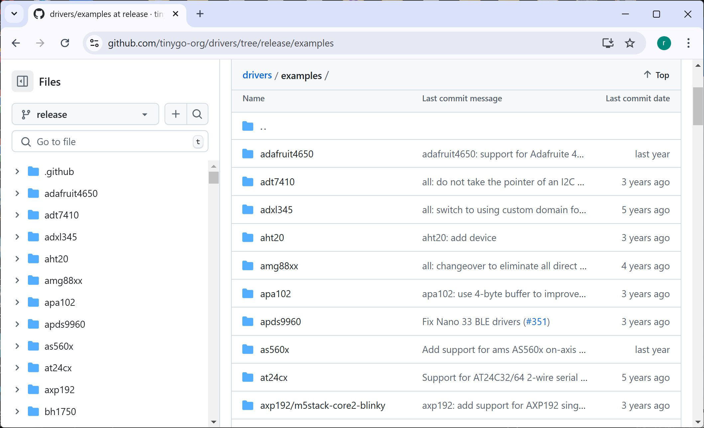

แนะนำการใช้งาน TinyGo สำหรับการเขียนโปรแกรมไมโครคอนโทรลเลอร์#
Keywords: Go / TinyGo, Microcontroller Programming, Go-based Software Development
▷ แนะนำภาษา Go#
Go หรือที่รู้จักในชื่อ Golang เป็นภาษาคอมพิวเตอร์ที่กำลังได้รับความนิยม และพัฒนาโดย Google และมีซอฟต์แวร์แบบโอเพ่นซอร์ส เช่น Go Compiler และมี TinyGo ที่สามารถนำไปใช้คอมไพล์โค้ดสำหรับบอร์ดไมโครคอนโทรลเลอร์ หรือแปลงให้เป็นโค้ด Web Assembly (WASM) ได้
Go/TinyGo สามารถนำไปใช้ในการเรียนรู้และพัฒนาทักษะการเขียนโค้ดในบริบทของการสร้างระบบซอฟต์แวร์ที่มี องค์ประกอบหลายส่วน เช่น ระบบ IoT หรือระบบควบคุมอัตโนมัติที่ทำงานร่วมกับเซนเซอร์และฮาร์ดแวร์จริง โครงสร้างของระบบอาจเแบ่งออกได้เป็น 4 ส่วน ดังนี้
- Web App (Frontend)
- ส่วนนี้เป็นการใช้ WebAssembly (WASM) ที่คอมไพล์จากโค้ด Go (ใช้ TinyGo Compiler) ร่วมกับ JavaScript + HTML5/CSS เพื่อสร้าง Web Application แบบ Interactive
- ตัวอย่างการใช้งาน เช่น การแสดงข้อมูลเซนเซอร์แบบเรียลไทม์ หรือการส่งคำสั่งควบคุมไมโครคอนโทรลเลอร์
- Go (Server Backend)
- ส่วนนี้ทำหน้าที่เป็นตัวกลางเชื่อมต่อระหว่าง WebApp และ MCU
- มีการเชื่อมต่อด้วยรูปแบบต่าง ๆ เช่น WebSocket และ MQTT (สำหรับส่งข้อมูลแบบเรียลไทม์ระหว่าง WebApp และ Backend) การเชื่อมต่อด้วยสายผ่านพอร์ต Serial/USB หรือแบบไร้สายด้วย WiFi/BLE กับบอร์ดไมโครคอนโทรลเลอร์
- TinyGo (MCU with WiFi/Internet Connectivity)
- การเขียนโปรแกรมสำหรับไมโครคอนโทรลเลอร์ เช่น การอ่านค่าจากโมดูลเซนเซอร์ การเชื่อมต่อระบบเครือข่าย เป็นต้น
- GUI Desktop App
- การพัฒนาซอฟต์แวร์เชิงกราฟิกที่เป็นส่วนเชื่อมต่อกับผู้ใช้ อาจประยุกต์ใช้ GUI Framework / Toolkit สำหรับภาษา Go อย่างเช่น Fyne
▷ แนะนำ TinyGo#
TinyGo เป็นคอมไพเลอร์สำหรับภาษา Go (ใช้ซอฟต์แวร์ Open Source ที่เรียกว่า LLVM) เพื่อรองรับการทำงานบนไมโครคอนโทรลเลอร์ (MCUs) และยังสามารถแปลงให้เป็นโค้ดเพื่อใช้งานกับ WebAssembly (WASM) ได้ด้วย (เหมาะสำหรับการสร้างเว็บแอปพลิเคชัน)
TinyGo Initial Release ซึ่งถือว่าเป็นเวอร์ชัน v0.1 ได้ถูกเผยแพร่บน GitHub ในเดือนกุมภาพันธ์ ค.ศ. 2019 โดย Ayke van Laethem นักพํฒนาซอฟต์แวร์ชาวเนเธอร์แลนด์
แม้ TinyGo จะไม่รองรับฟีเจอร์ทั้งหมดของภาษา Go รวมถึงไลบรารี่อาจมีใช้ได้ไม่ครบ (ดูรายการแพ็กเกจที่เป็น Go Standard Libraries) แต่ก็มีฟังก์ชันการทำงานสำหรับการควบคุมและใช้งานวงจรภายในพื้นฐานของ MCU และมี TinyGo Packages ซึ่งเป็นไลบรารีสำหรับการเขียนโค้ดเพื่อใช้งานโมดูลอิเล็กทรอนิกส์เช่น เซนเซอร์หลายประเภท
บนหน้าเว็บไซต์ เช่น "Go Playground" ผู้ใช้สามารถทดลองเขียนโค้ดและรันโปรแกรมได้ และสำหรับ TinyGo ก็มีเช่นกัน เรียกว่า "TinyGo Playground" ผู้ใช้สามารถลองรันโค้ดตัวอย่าง และเลือกใช้กับบอร์ดไมโครคอนโทรลเลอร์ตัวอย่างได้
รูป: ตัวอย่างการใช้งาน TinyGo Playground สำหรับบอร์ด Pico
แพ็กเกจที่สำคัญสำหรับของ TinyGo สำหรับการเขียนโปรแกรมไมโครคอนโทรลเลอร์คือ
machine โดยเกี่ยวข้องกับการใช้งานวงจรต่าง ๆ ภายในชิป เช่น
GPIO, ADC, UART, SPI, I2C, PWM, USB เป็นต้น
และมีรายละเอียดแตกต่างกันไปขึ้นอยู่กับบอร์ดไมโครคอนโทรลเลอร์ที่เลือกใช้
การเขียนโค้ดด้วยภาษา Go และใช้งานวงจรต่าง ๆ ของไมโครคอนโทรลเลอร์ รวมถึงการใช้งานร่วมกับโมดูลอิเล็กทรอนิกส์ประเภทต่าง ๆ ก็มีตัวช่วย กล่าวคือ มีไลบรารีให้เลือกใช้งาน และผู้ใช้สามารถดูได้จาก

รูป: github.com/tinygo-org/drivers/examples
ตัวอย่างบอร์ดที่ใช้ชิป RP2040
TinyGo v0.35.0+ รองรับ บอร์ดที่ใช้ชิป RaspberryPi RP2350 เช่น Pico2
ตัวอย่างบอร์ดที่ใช้ชิป nRF52840
อีกแพ็กเกจหนึ่งที่เกี่ยวข้องกับการทำงานของเฟิร์มแวร์ที่ได้จากโค้ด TinyGo คือ runtime
เริ่มต้นตั้งแต่การตั้งค่าของฮาร์ดแวร์หลังจากการรีเซต (System Initialization) การจัดการหน่วยความจำ
เช่น Stack และ Heap การจัดการอินเทอร์รัพท์ของไมโครคอนโทรลเลอร์
การทำงานของฟังก์ชัน main และฟังก์ชัน Goroutine (ถ้ามี) เป็นต้น
- tinygo.org/docs/reference/microcontrollers/machine/
- tinygo.org/docs/reference/machine/
- pkg.go.dev/github.com/tinygo-org/tinygo/src/machine
- github.com/tinygo-org/tinygo/tree/release/src/machine
- github.com/tinygo-org/tinygo/tree/release/src/runtime
TinyGo สามารถทำงานได้กับไมโครคอนโทรลเลอร์หลายประเภท เช่น ชิปที่ใช้ซีพียูตระกูล 32-bit ARM Cortex-M (เช่น nRF528xx, RP2040, ATSAMD21/51)
TinyGo รองรับชิปไมโครคอนโทรลเลอร์รุ่นอื่นด้วย เช่น STM32, ESP32 / ESP32-C3
แต่ระดับการสนับสนุนอาจแตกต่างกันไป เช่น ยังไม่สามารถใช้ WiFi/BLE ภายในชิป ESP32
หากจะใช้ WiFi ก็แนะนำให้ใช้บอร์ด Raspberry Pi Pico-W และมีไลบารี
cyw43439 ให้ใช้งาน (ดูตัวอย่างการใช้งาน
cyw43439-examples)
รายการบอร์ดไมโครคอนโทรลเลอร์ที่ใช้ได้กับ TinyGo สามารถดูได้จาก:
→ github.com/tinygo-org/tinygo/tree/release/targets/
→ tinygo.org/docs/reference/microcontrollers/
ตัวอย่างไฟล์ JSON สำหรับการตั้งค่าใช้งานบอร์ดไมโครคอนโทรลเลอร์สำหรับ TinyGo:
▷ การติดตั้ง Go และ TinyGo สำหรับ Windows 10 / 11#
TinyGo Compiler สามารถติดตั้งและใช้งานได้กับระบบปฏิบัติการ Windows, Linux และ macOS
อ้างอิงตามขั้นตอนการติดตั้ง "Quick install Guide for TinyGo on Windows" เริ่มต้นด้วยเปิดใช้งานโปรแกรม Windows PowerShell
แล้วทำคำสั่งทีละบรรทัดดังนี้ เพื่อทำการติดตั้งโปรแกรมที่มีชื่อว่า
Scoop ซึ่งจะใช้ติดตั้งโปรแกรม Go และ TinyGo สำหรับการใช้งานแบบ Command Line
ร่วมกับระบบปฏิบัติการ Windows
Set-ExecutionPolicy -ExecutionPolicy RemoteSigned -Scope CurrentUser
Invoke-RestMethod -Uri https://get.scoop.sh | Invoke-Expression
จากนั้นทำคำสั่งต่อไปนี้ เพื่อติดตั้ง Go และ TinyGo และตรวจสอบเวอร์ชันของโปรแกรมเมื่อได้ติดตั้งสำเร็จแล้ว
scoop install go
scoop install tinygo
go version
tinygo version
scoop update go
scoop update tinygo
รูป: ตัวอย่างการทำคำสั่งสำหรับ scoop
รูป: ตัวอย่างการทำคำสั่งเพื่อตรวจสอบดูเวอร์ชันของโปรแกรม go และ tinygo
ถัดไปให้ทำคำสั่งต่อไป เพื่อตั้งค่าให้เป็น Full Control สำหรับไดเรกทอรี AppData\LocalTemp ของผู้ใช้
$tempPath = "$env:USERPROFILE\AppData\Local\Temp"
icacls $tempPath /grant "$($env:USERNAME):(F)" /t /c
Ubuntu Linux / WSL2: ขั้นตอนการทำคำสั่งเพื่อติดตั้ง TinyGo (อ้างอิงจาก tinygo.org/getting-started/install/linux/)
1) ดาวน์โหลดไฟล์จาก https://github.com/tinygo-org/tinygo/releases
ในตัวอย่างนี้ได้ทดลองใช้ไฟล์ tinygo_0.34.0_amd64.deb
2) ทำคำสั่งติดตั้งไฟล์ที่ได้ดาวน์โหลดมา
$ sudo dpkg -i tinygo_0.34.0_amd64.deb
3) เพิ่มรายการสำหรับตัวแปรของระบบ PATH
$ echo 'PATH=$PATH:/usr/local/bin' >> ~/.bashrc
$ export PATH=$PATH:/usr/local/bin
$ tinygo version
tinygo version 0.34.0 linux/amd64 (using go v1.22.2 and LLVM v18.1.2)
ถัดไปแนะนำให้ติดตั้งและใช้งานโปรแกรม VS Code IDE on Windows เพื่อใช้งานการเขียนโค้ด
เปิดใช้งานและติดตั้ง VS Code Extension Packs สำหรับ Go และ TinyGo ตามลำดับ
รูป: การติดตั้ง Go Extension Pack
รูป: การติดตั้ง TinyGo Extension Pack
สร้างไดเรกทอรีใหม่สำหรับทดลองเขียนโค้ด Go / Tinygo แล้วเปิดด้วย VS Code IDE
จากนั้นให้สร้างไฟล์ main.go เพิ่มไว้ในโปรเจกต์ และเพิ่มโค้ดตามตัวอย่างต่อไปนี้
package main
import (
"machine"
"time"
)
func main() {
println("TinyGo on Pico-RP2040 Board")
// Configure the on-board LED pin (typically GPIO 25 for RP2040)
led := machine.LED
led.Configure(machine.PinConfig{Mode: machine.PinOutput})
for { // an endless loop
led.High() // Turn the LED on
time.Sleep(time.Second) // Wait for 1 second
led.Low() // Turn the LED off
time.Sleep(time.Second) // Wait for 1 second
}
}
ทำคำสั่งใน Terminal ภายใน VS Code IDE เพื่อสร้างโปรเจกต์ใหม่โดยใช้ชื่อ main
ซึ่งจะมีการสร้างไฟล์ go.mod เพิ่มไว้ในโปรเจกต์
go mod init main
ทำคำสั่งต่อไปนี้ เพื่อติดตั้งโมดูลเพิ่มเติมสำหรับ TinyGo และจำเป็นต้องใช้สำหรับโค้ดตัวอย่าง
go mod tidy
รูป: ตัวอย่างการทำคำสั่ง go mod init main และ go mod tidy
ให้คลิกชื่อ pico ที่อยู่ในแถบด้านล่าง เพื่อเลือกใช้หรือตั้งค่า Target Board
เช่น เลือก pico เป็นบอร์ดไมโครคอนโทรลเลอร์ที่ต้องการใช้งาน

รูป: การเลือกบอร์ดไมโครคอนโทรลเลอร์ pico
ทำคำสั่งต่อไปนี้ เพื่อลองทำขั้นตอน Build โดยแปลงซอร์สโค้ด ให้เป็นไฟล์เฟิร์มแวร์สำหรับนำไปใช้กับบอร์ดไมโครคอนโทรลเลอร์
tinygo clean
tinygo build -target=pico -o -size=short .
ผลจากการทำคำสั่งจะได้ไฟล์ .elf ( Executable and Linkable Format)
แต่ยังไม่สามารถนำไปใช้กับบอร์ด Pico ได้โดยตรง แต่จะต้องสร้างไฟล์ .uf2 (USB Flashing Format)
เป็นเอาต์พุตด้วย โดยทำคำสั่งต่อไปนี้
tinygo build -target=pico -o pico_demo.uf2 .
คำสั่ง tinygo build หมายถึง การคอมไพล์ซอร์สโค้ด ซึ่งมีการกำหนดค่าต่อไปนี้
-target=picoหมายถึง คอมไพล์โค้ดสำหรับบอร์ด Pico-size=shortหมายถึง แสดงขนาดของหน่วยความจำ Flash และ SRAM ที่จะต้องใช้สำหรับโปรแกรมการทำงานของโปรแกรม.elf
รูป: ตัวอย่างการทำคำสั่ง tinygo build และ tinygo flash
ตรวจสอบให้แน่ใจก่อนว่า บอร์ด Pico อยู่ในโหมดการทำงาน UF2 Boot
(กดปุ่ม BOOT ค้างไว้ แล้วเสียสาย USB กับพอร์ตของคอมพิวเตอร์)
ซึ่งจะมองเห็น USB Flash Drive (RPI-RP2) ของบอร์ดดังกล่าว
จากนั้นจึงทำคำสั่ง tinygo flash -target=pico
ข้อสังเกต: ถ้าในโค้ด มีการใช้คำสั่ง println() เพื่อส่งข้อความจากบอร์ด Pico / RP2040
ผ่านทาง USB-CDC มายังคอมพิวเตอร์ผู้ใช้ และหลังจากอัปโหลดไฟล์เฟิร์มแวร์ไปยังบอร์ดได้แล้ว
ครั้งถัดไป ผู้ใช้สามารถทำคำสั่ง tinygo flash -target=pico ได้โดยไม่จำเป็นต้องทำให้บอร์ดเข้าสู่โหมด UF2 Boot ก่อนอัปโหลด
▷ กล่าวสรุป#
บทความนี้ได้นำเสนอขั้นตอนการติดตั้งและใช้งาน Go และ TinyGo ร่วมกับ VS Code IDE สำหรับคอมพิวเตอร์ของผู้ใช้ระบบปฏิบัติการ Windows 10/11 และทดลองเขียนโค้ดสำหรับบอร์ดไมโครคอนโทรลเลอร์ Raspberry Pi Pico หรือบอร์ดตัวเลือกอื่นที่ใช้ชิป RP2040
บทความที่เกี่ยวข้อง
This work is licensed under a Creative Commons Attribution-ShareAlike 4.0 International License.
Created: 2024-12-20 | Last Updated: 2025-01-04